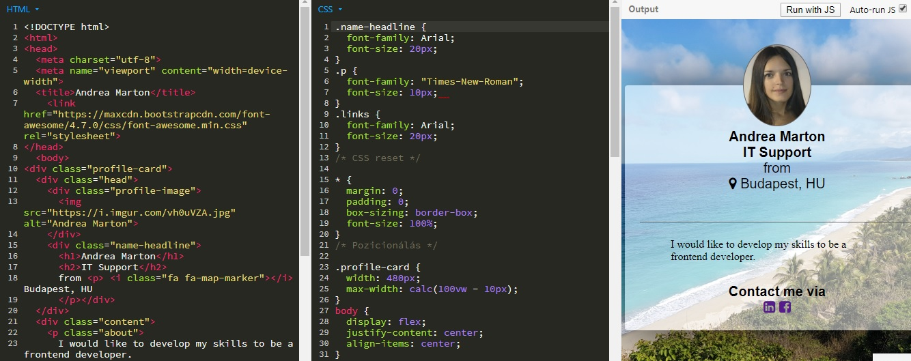
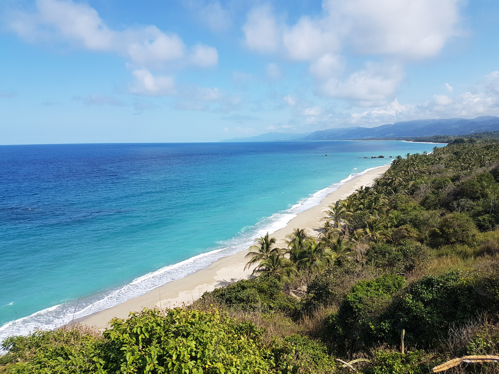

Profession

I am a customer focused person who developed her career path from waitress to CRM Manager in IT sector.During this path I gained various useful experiences both in B2C and B2B businesses, also developed strong technical skills including the usage of several hotel and booking software, SAP system, My SQL, Trello, Functional and Manual Software and Application testing.
Learning

I am a self-motivated person, who is always looking for new challenges. I believe in lifelong learning; therefore, I continuously improve my skills. Currently I am taking part in a frontend developer course, with that knowledge I am planning to build websites to my future clients.I have spent seven years in London and pretty much enjoyed working, living and studying abroad in an international environment.
Traveler

By traveller, I mean I am planning, organising and making trips, where I can immerse myself in local, cultural and natural experiences around the world. My recent journey was to Colombia where I was lucky enough to spend time in indigenous communities, do treks in the Andes and the Sierra Nevada de Santa Marta, visit coffee plantations, beach destinations in the Caribbean, meet incredible biodiversity in the Amazon rainforest.
Hobby

My hobbies are mostly sport oriented like swimming, cycling and trekking. I spend most of my free time in the nature. I also like taking photos and creating photobooks.
Education

College of North West London – Greater London, England
University of West Hungary – Gyor, Hungary
Contact me via